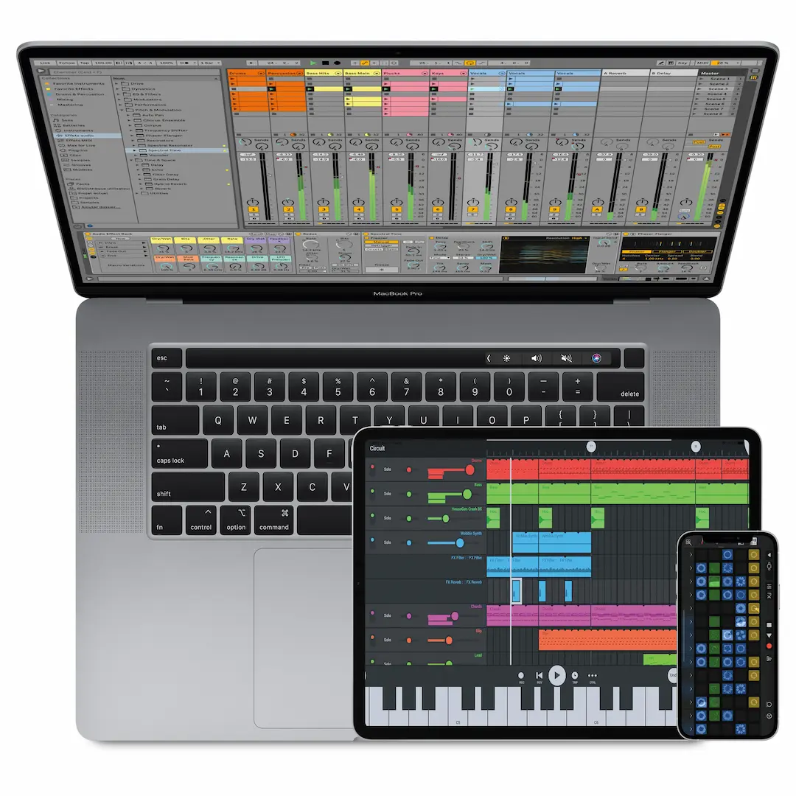

Télécharger SØ
Logiciel rapide, fluide et flexible pour la créationaet l'interprétation de musique.

Version 1.0.0
Taille 1.25 Go
Version 1.0.0
Taille 1.25 Go
Goodies
Logiciel rapide, fluide et flexible pour la création et l'interprétation de musique.